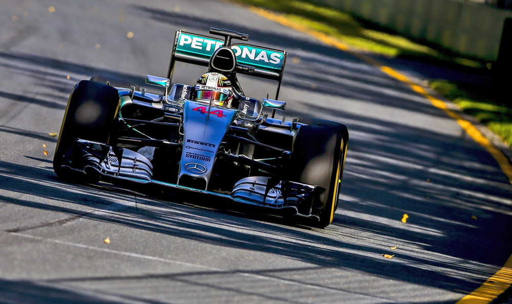

2015

Le più importanti scuderie che hanno partecipato al Campionato Mondiale di Formula1 2015 erano:
- Williams
- Sauber
- Loftus F1 team
- Mercedes
Il campionato di Formula1 svolto nel 2015 è stato vinto da Lewis Hamilton che con la scuderia Mercedes vinse 7 mondiali
nelle annate 2008-2014-2015-2017-2018-2019-2020. Hamilton è stato il pilota che (al giorno d'oggi) ha vinto più campionati mondiali di Formula1.
HOME
Tutti i diritti sono riservati
Sito realizzato da Boniotti Elisa, Lucchini Davide, Tassone Thomas